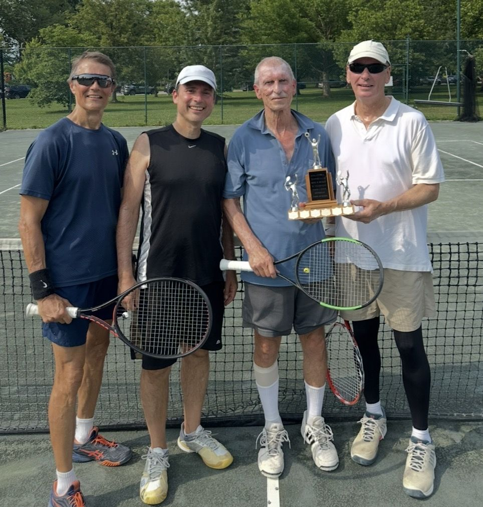
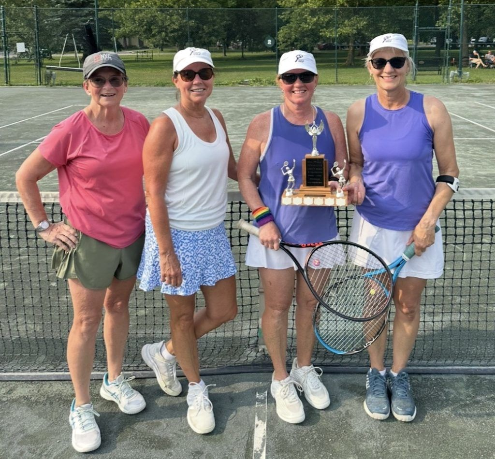
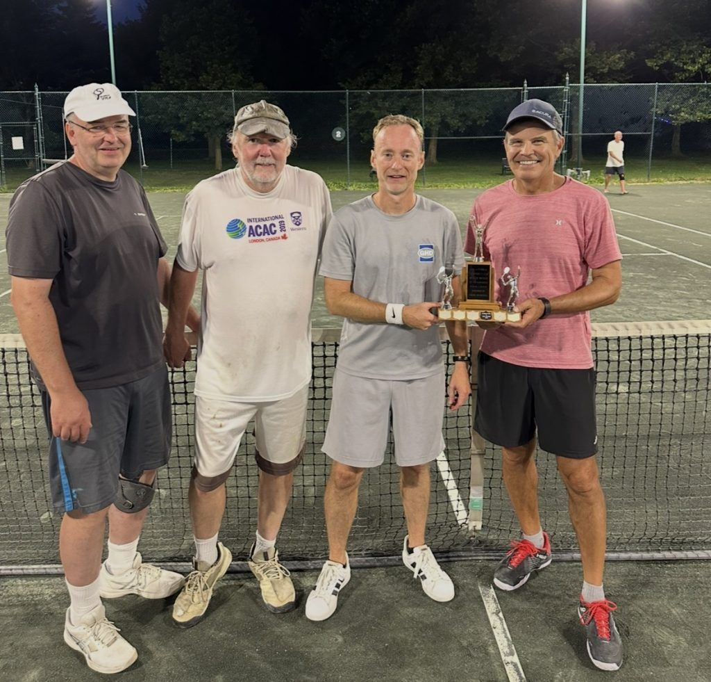
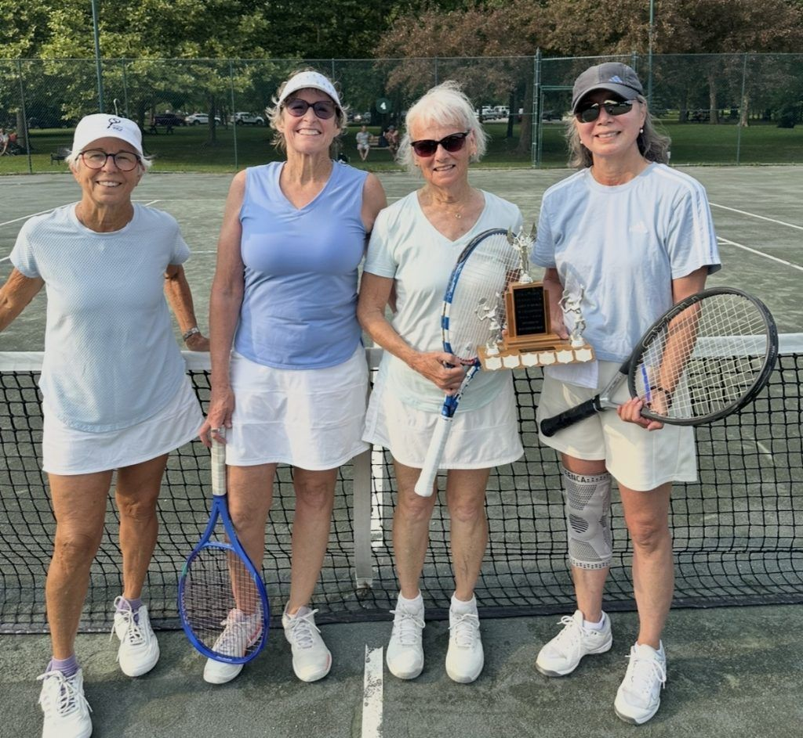

2026 Men's and Ladies' Doubles Club Championships
We held our 2026 Doubles Club Championships this past weekend, and it proved to be one of the most competitive doubles championships we have seen in recent years. The event was very well attended, with several exceptionally strong draws and plenty of entertaining matches throughout the weekend.
Finals night certainly delivered. Several matches went the distance, with momentum swings, long rallies, great doubles strategy, and some outstanding shot-making across every division.

Men’s Open A
The Men’s Open A final featured brothers Grant McPherson and Kent McPherson against our Club Pros, Mark Barton and Liam Benton.
For Grant and Kent, this marked an incredible fifth consecutive appearance in the Men’s A final, having previously captured the title together in 2024. Mark and Liam, meanwhile, were both competing in their first Men’s Doubles Club Championship final.
Both sides played intelligent doubles from the opening toss. Liam’s steady baseline game combined with Mark’s lethal presence at the net helped the pros edge out a very competitive first set, 7-5.
In the second set, Grant and Kent seemed to regain some confidence and energy. The brothers began putting together several clean games late in the set and earned a 6-4 second-set victory.
That meant the spectators got exactly what they wanted.. a third set to decide the championship.
After plenty of entertaining rallies, quick exchanges at the net, and some enthusiastic cheering from both teams, Grant and Kent managed to secure a crucial break of serve. They held from there to take the third set and become the 2026 Men’s Open A Doubles Club Champions.
As entertaining as the final was, it may not even have been the most memorable Men’s A match of the weekend.
That honour could belong to the quarterfinal between Adam Monteith and Jason Erb and John Fischer and Ryan Lay. Adam and Jason came back to win 2-6, 6-3, 6-3 in what several spectators called the match of the tournament.
The rallies were long, the level was extremely high, and perhaps that should not be surprising considering every player on the court has been a club champion before. Former Club Pro John Fischer also produced two of the best shots we have seen at the club in quite some time… an around-the-post, low flying banana shot and a tweener passing shot down the line.
It was one of many outstanding matches in a tremendously strong Men’s Open draw.
Women’s Open A
The Women’s Open A final saw Marta Andrekovic and Ana Perisic battle the mother & daughter duo of Kim Straus and Abbie Straus.
Marta and Kim had each won this event previously with different partners, while Ana and Abbie were both looking for their first Women’s Doubles Club Championship title. One former champion was going to guide her partner to a first title.
Kim and Abbie impressed in the opening set with excellent communication and smart doubles tactics. They consistently worked together during points and made adjustments between them, helping them take the opening set 6-4.
The second set could not have been more different.
Marta and Ana suddenly found another gear, while Kim and Abbie temporarily fell out of the rhythm that had worked so well in the first. In what may have been the quickest set of the entire tournament, Marta and Ana raced through the second 6-0.
Heading into the third, spectators had no idea what to expect. Would Marta and Ana continue rolling, or would Kim and Abbie rediscover the form that carried them through the opening set?
The answer came quickly. Kim and Abbie reset, found their game again and produced a strong deciding set, winning it 6-2 to capture the 2026 Women’s Open A Doubles Club Championship.

Men’s Open B
In the Men’s Open B final, Jason Cave and Aaron Lang faced Shawn Flanagan and Greg Vivian.
Shawn and Greg both entered the match with previous B Division titles alongside different partners. Jason and Aaron were seeking their first Men’s B doubles title together, although Jason came into the weekend fresh off winning the Mixed Doubles Club Championship B Division with partner Monica Eickmeyer.
Shawn and Greg were able to sneak out the opening set 6-4, using relaxed, steady baseline play paired with aggressive and decisive work at the net.
Jason and Aaron responded in the second. They found more consistency and did a better job keeping the ball away from the opposing net player, allowing them to level the match with their own 6-4 set.
They carried that momentum straight into the deciding set.
Jason and Aaron took control early and never looked back, winning the third 6-2 to claim their first Men’s Open B Doubles Club Championship title.

Women’s Open B
The Women’s Open B final featured Stacy Smith and Monica Eickmeyer against Johanna Billings and Maria Donkers.
Johanna and Maria have accumulated several A Division Club Championship titles over their tennis careers, making them a formidable team heading into the final.
Monica and Stacy had also shown their level earlier in the weekend, pushing the No. 1 seeds in a close match in the A draw before falling into the B Division. Stacy was battling for her first title this weekend, whereas Monica is just looking to add to her many accolades.
Johanna and Maria brought plenty of firepower to the final, but Monica and Stacy handled the pace well. Rather than trying to overpower their opponents, they consistently used angles and placement to move Johanna and Maria out of comfortable positions.
Their steadiness and tactical shot selection proved decisive, as Monica and Stacy captured the Women’s Open B title with an impressive 6-1, 6-2 victory.

Men’s Over 50 A
The Men’s Over 50 A final saw Tim Keillor and Tom Warnock face Ron Zehnal and Brian Arens.
Ron and Brian are two extremely steady players who know their way around a doubles court, but Tim and Tom remain one of the most difficult teams at the club to play.
Both Tim and Tom transition forward effortlessly, routinely handling difficult low volleys and half-volleys on their way to the net. Once they establish their position at the net, finding a way past them becomes a major challenge.
Tim and Tom once again proved too difficult to break down, defeating Ron and Brian 6-2, 6-3 to capture the Men’s Over 50 A title for an incredible fourth consecutive year.

Women’s Over 50 A
In the Women’s Over 50 A final, Joan Aitcheson and Edda Lang competed against Michele Thomson and Sandie Ennett.
Sandie deserves special recognition for simply being on the court after recently being involved in a car collision. Despite that, she came ready to compete and played some excellent tennis alongside Michele.
Michele and Sandie claimed a competitive opening set 6-4.
Joan and Edda did not let the first-set loss affect their energy. They continued battling, became increasingly consistent and did an excellent job finishing the important points at the net. They answered with a 6-4 second-set victory.
With the teams splitting sets, the championship came down to a 10-point match tiebreak.
Joan and Edda took control of the breaker and won it 10-4, earning their first Women’s Over 50 A Doubles Club Championship title.

Men’s Over 50 B
The Men’s Over 50 B final featured Stephen Fischer and Ray Leduc against new club members Mark Uleryk and Chris Campbell.
Stephen and Ray are normally found competing against Tim and Tom for the A title, but this year were knocked into the B draw following a loss to Ron and Brian.
Mark and Chris may be new members of STC, but they are certainly not new to tennis.
This match was long. Very long.
Some rallies in this final may have lasted longer than the entire second set of the Women’s Open A final.
Both teams were extremely reluctant to miss. Rather than taking unnecessary risks, they consistently sent the ball deep into the court, patiently waiting for an opponent to make an error or provide an opportunity for the net player to finish the point.
With very little separating the teams, both sets headed to tiebreaks.
In the end, Mark and Chris proved to be ever so slightly more consistent, winning 7-6 (7-4), 7-6 (9-7) to become the 2026 Men’s Over 50 B Doubles Club Champions in their first season at STC.

Women’s Over 50 B
The Women’s Over 50 B final saw Rose Dunbar and Julie Redfern face Kukiko Yamauchi and Janet Bradley.
All four players are thoughtful doubles competitors who regularly seem to make the right shot at the right time, making for another strategically interesting match.
Both teams brought consistency and strong court awareness, but Kukiko and Janet demonstrated the chemistry that comes from competing together regularly over the years.
Their teamwork ultimately proved to be the difference, as Kukiko and Janet won 6-3, 6-1 to take the Women’s Over 50 B Doubles Club Championship.
What a Weekend!
From extremely competitive early-round matches to a finals night filled with three-set battles, long rallies and memorable moments, the level of tennis throughout the weekend was outstanding.
Thank you to everyone who participated, came out to watch, and helped create such a great atmosphere around the club.
Congratulations to all of our 2026 Doubles Club Champions!
See you at the singles championships
The Men's and Ladies' Singles Club Championships run August 21 – 26. Draws are posted at the clubhouse.